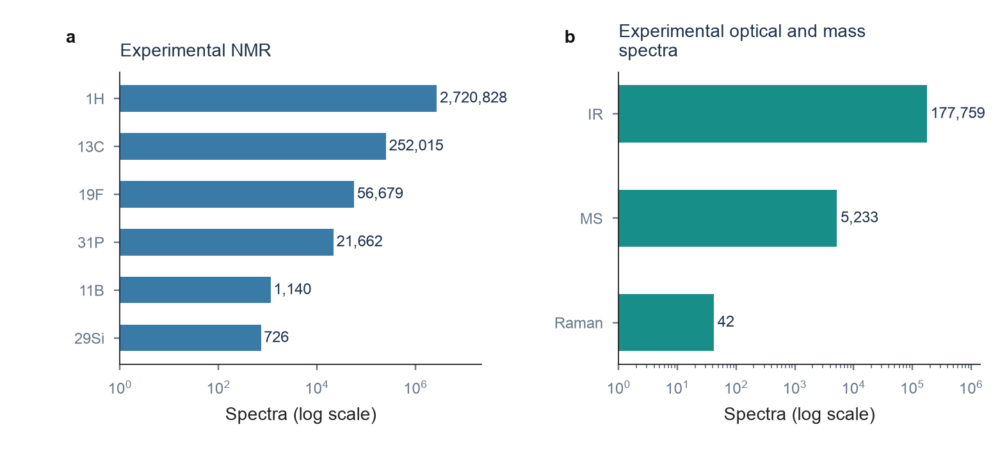

数据
通过统一的数据接口加载实验测量与计算光谱。本节介绍清洗后可用的数据、字段、实验条件，以及训练、验证和测试文件。
OpenMolSpec 实验数据集
数据集 |
分类 |
内容描述 |
谱数量 |
分子数量 |
|---|---|---|---|---|
实验 NMR |
氢碳化学位移、结构、分子式、谱文本与采集信息。 |
2,972,843 |
2,678,511 |
|
实验 |
硼化学位移及含硼分子结构。 |
1,140 |
1,017 |
|
实验 |
氟化学位移及含氟分子结构。 |
56,679 |
50,402 |
|
实验 |
硅化学位移及含硅分子结构。 |
726 |
636 |
|
实验 |
磷化学位移及含磷分子结构。 |
21,662 |
18,238 |
|
实验 |
数值化 m/z–强度峰表及对应分子结构。 |
5,233 |
4,980 |
|
实验 |
实验红外峰位置及对应分子结构。 |
177,759 |
168,197 |
|
实验 |
实验拉曼峰位置及对应分子结构。 |
42 |
39 |
本数据集由 OpenDataLab / WanJuan MolSpectra v1.0.3 清洗整理。H/C 按标准分子身份组织，其他视图保留去重后的数值谱及实验条件。



外部实验资源
数据集 |
分类 |
内容描述 |
谱数量 |
分子数量 |
|---|---|---|---|---|
NMR |
具有有效分子结构的实验氢谱与碳谱。 |
3,091,126 |
1,492,268 |
|
NMRSpec / NMRTrans |
NMR |
用于谱结构检索、结构生成的 H/C 谱与目标结构。 |
20,000 |
10,000 |
NMRGym |
NMR |
实验 NMR 分子结构解析测试视图。 |
20,000 |
10,000 |
MassSpecGym v1.5 |
MS/MS |
具有结构和采集字段、可用于前向预测的数值串联质谱。 |
119,029 |
16,974 |
MassBank |
MS/MS |
含有效分子结构的数值 MS2 谱。 |
120,512 |
11,699 |
计算光谱
数据集 |
分类 |
内容描述 |
谱数量 |
分子数量 |
|---|---|---|---|---|
OpenMolSpec / openSpec test |
IR / Raman / NMR |
20,390 条计算记录对应的 IR/Raman 谱，附 H/C 位移及分子性质。 |
40,780 |
16,728 |
QMe14S |
IR / Raman |
覆盖 14 种元素的 184,252 对有限、非常数 IR/Raman 谱。 |
368,504 |
180,073 |
IR 与 Raman 每个通道分别计为一条谱，分子数量按同一视图的结构身份去重统计。下载分列计数。
加载数据
from openmolspec.dataset import molspectra
data = molspectra("opendatalab_nmr", root="data/nmr")
record = data["test"].head(1)[0]
print(record["smiles"])
print(record["h_peaks_ppm"])
paired = data["train"].select(modalities=["1H", "13C"])
将清洗后的 train.jsonl、val.jsonl、test.jsonl 放在 data/nmr 目录。NMR 数据指南解释字段，划分指南说明如何构建自己的数据集。下载计数与分布。
参考文献
OpenDataLab. WanJuan MolSpectra, version 1.0.3. Experimental molecular spectroscopy dataset. Source
Wang, J.-J., Jin, Y., Zhi, C.-Y., et al. NMRexp: A database of 3.3 million experimental NMR spectra. Scientific Data 12, 1954 (2025). doi:10.1038/s41597-025-06245-5. Source
Yang, L., Yang, Z., Xie, J., Wang, Y., Gao, B., Fu, T., Wei, X., Sun, J., Wu, J., He, C., Li, Y. & Gu, Q. NMRTrans: Structure Elucidation from Experimental NMR Spectra via Set Transformers. arXiv:2602.10158 (2026). Source
Fang, Z., Yang, C., Yu, H., Luo, H., He, H., Xie, J., Yang, Z. & Xia, J. NMRGym: A Comprehensive Benchmark for Nuclear Magnetic Resonance Based Molecular Structure Elucidation. arXiv:2601.15763 (2026). Source
Bushuiev, R., Bushuiev, A., de Jonge, N. F., Young, A., et al. MassSpecGym: A benchmark for the discovery and identification of molecules. Advances in Neural Information Processing Systems 37, Datasets and Benchmarks Track (2024). arXiv:2410.23326. Source
Horai, H., Arita, M., Kanaya, S., et al. MassBank: a public repository for sharing mass spectral data for life sciences. Journal of Mass Spectrometry 45, 703–714 (2010). doi:10.1002/jms.1777. Source
Yuan, M., Zou, Z. & Hu, W. QMe14S, A Comprehensive and Efficient Spectral Dataset for Small Organic Molecules. arXiv:2501.18876 (2025). Source
OpenMolSpec contributors. OpenMolSpec: Chemical spectroscopy datasets, models and learning workflows. Software release v1.0 (2026). Source